Fonts · compilació · objectes · llibreries · enllaç · make
Fonts · compilació · objectes · llibreries · enllaç · make
.c, .h, .o i executable
Què ha fet realment gcc entre aquestes dues ordres?
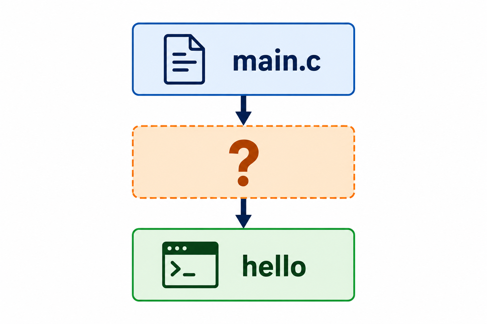
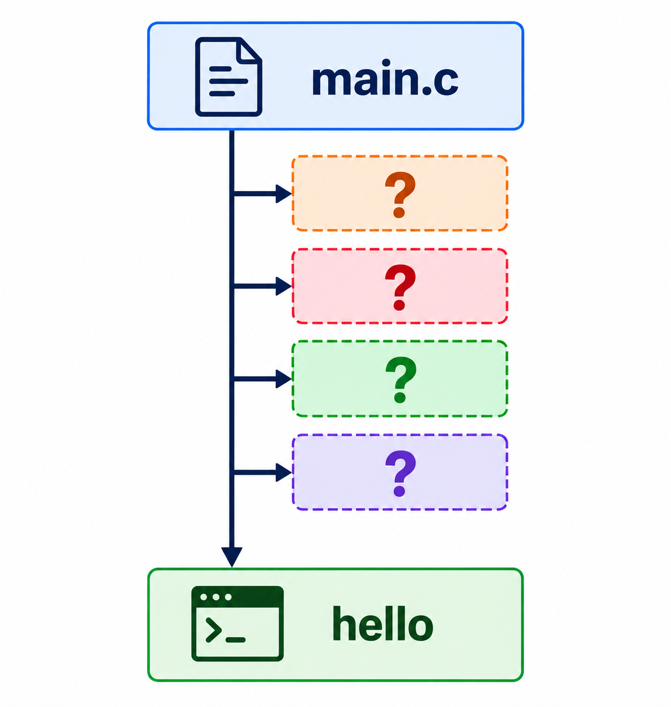
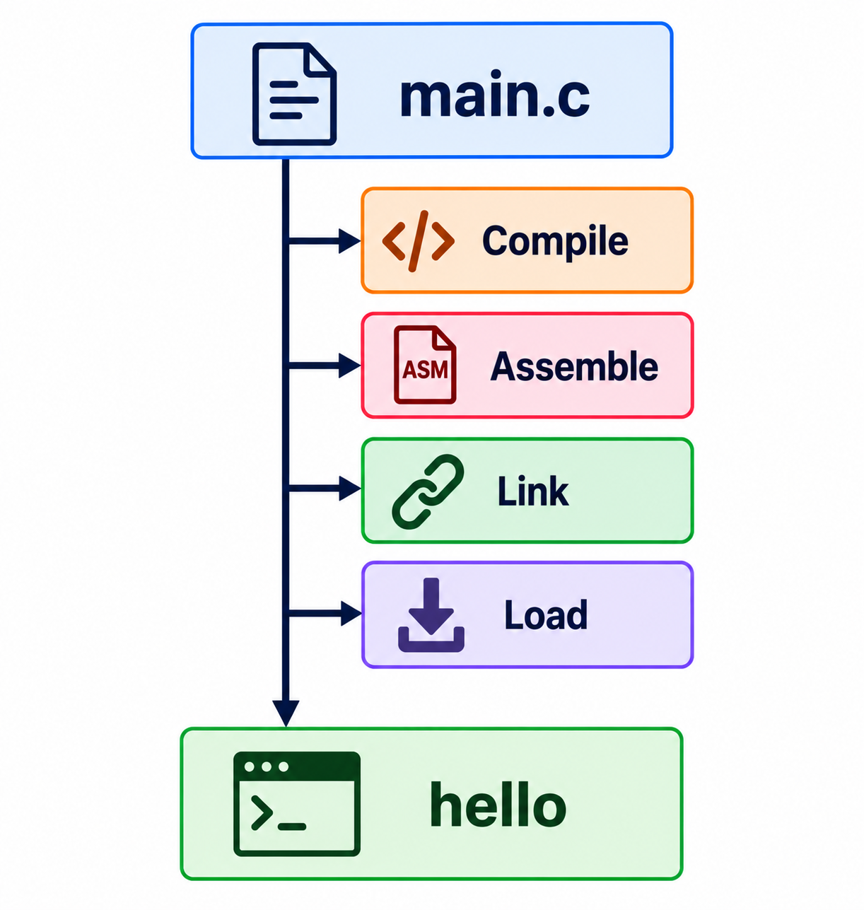
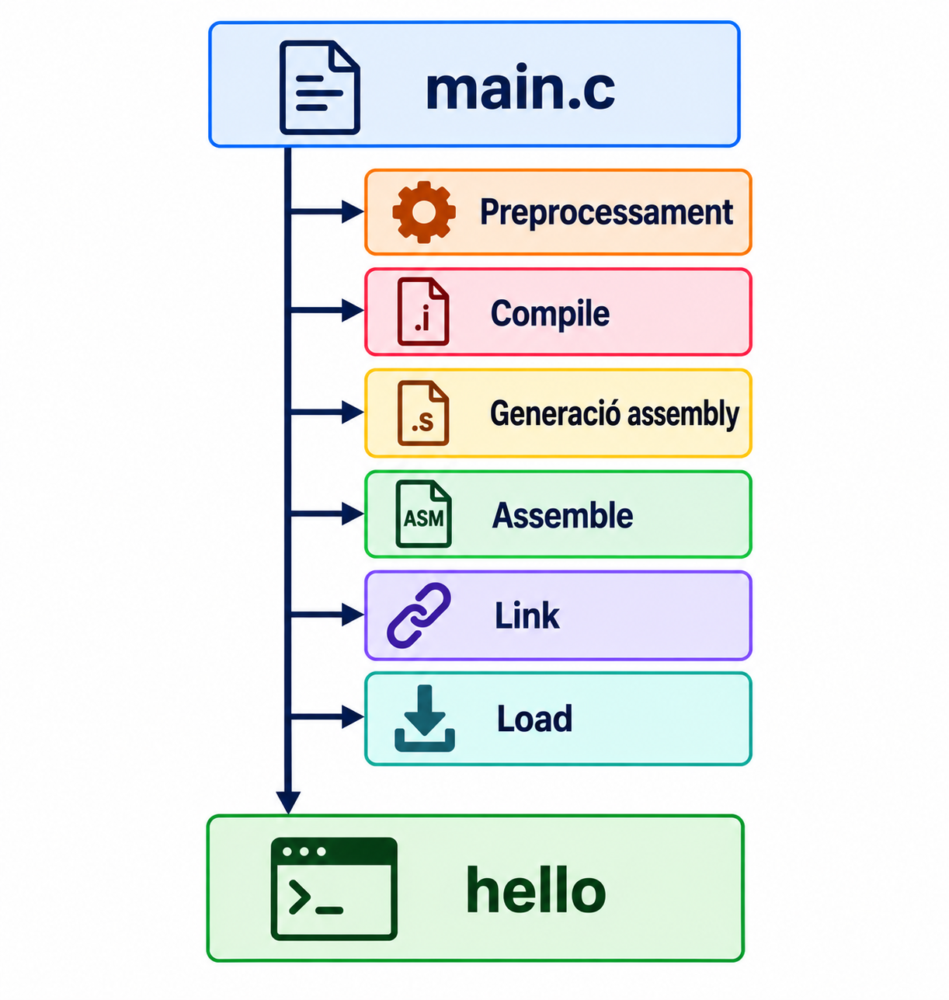
Quan diem informalment compilar un programa, estem agrupant diverses etapes diferents que consisteixen en: Compile → Assemble → Link → Load. A vegades, també s’inclou el preprocessament com a pas previ a la compilació i la generació d’assembly com a pas posterior.
gcc és el driver que coordina les diferents eines (preprocessador, compilador, assemblador, enllaçador). Per això gcc -c main.c i gcc main.o mathutils.o -o programa fan coses tan diferents.
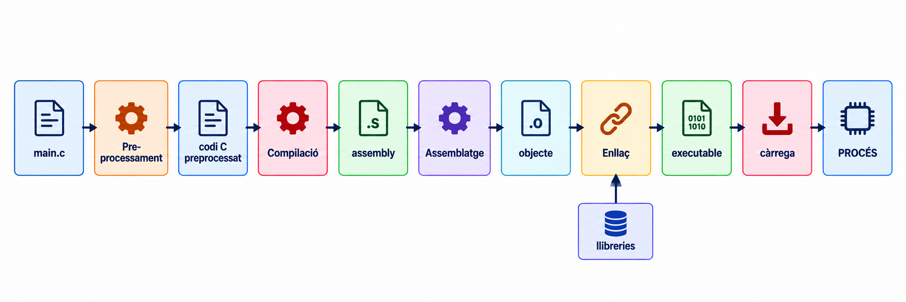
Cada etapa transforma un artefacte en un altre. Aquests artefactes intermedis normalment no es desen a disc quan feu gcc main.c -o hello, és el mateix gcc (el driver) qui els passa internament d’una eina a la següent. Si voleu observar-los, useu -E (atura’t al preprocessat), -S (atura’t a l’assembly) o -c (atura’t a l’objecte).
On està definida printf?
No és a main.c. La funció printf està implementada a la llibreria C (libc). El fitxer de capçalera stdio.h conté la declaració de printf, que el compilador necessita per comprovar que l’ús que en fem és correcte. La implementació real de printf està a la llibreria, que el linker afegirà al programa final.
Què significa realment aquest #include?
#include <stdio.h> no significa afegeix la llibreria stdio al programa.
#include significa: insereix el contingut del fitxer de capçalera en aquest punt, durant el preprocessament. El preprocessador el tracta com una inclusió textual del fitxer, és a dir, còpia literalment el contingut del fitxer de capçalera al fitxer font abans de compilar-lo.
El .h proporciona declaracions i informació necessària al compilador. No és, per si mateix, la implementació de printf.
Habitualment, el .h exposa la interfície i el .c conté la implementació. És una simplificació pedagògica: un .h també pot contenir #define, typedef, struct, enum, funcions static inline o declaracions extern.
int suma(int a, int b); això és una declaració.
int suma(int a, int b) { return a + b; } això és una definició.
Per què ens interessa separar-les?
Perquè diversos fitxers poden utilitzar una funció sense haver-ne de copiar la implementació. Això prepara directament la compilació separada.
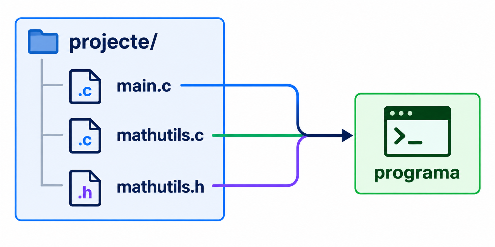
Hem de compilar-ho tot com un únic fitxer?
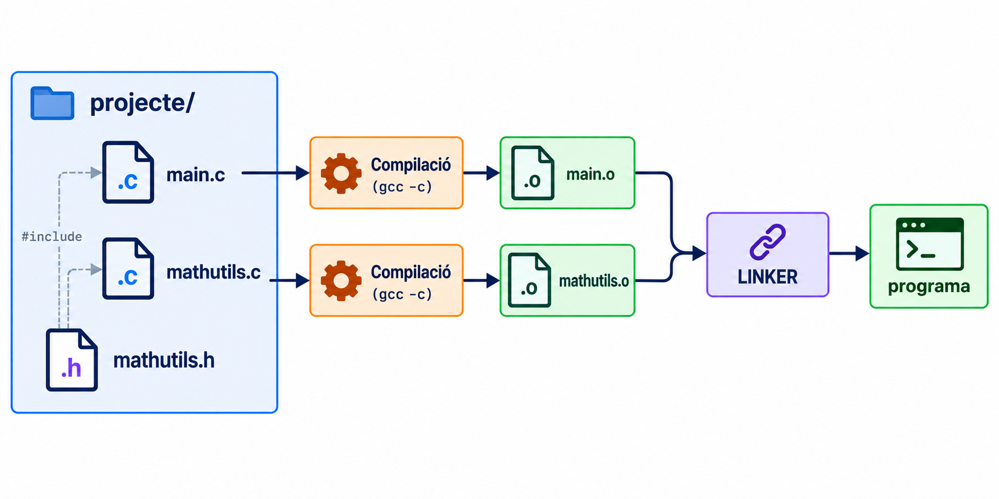
La compilació separada permet compilar cada fitxer .c independentment i obtenir un .o. Després, el linker combina els objectes i resol les referències entre ells.
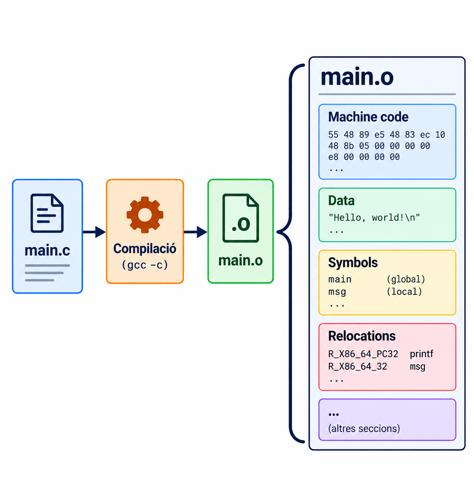
Object file: conté codi màquina, dades, símbols i informació de reubicació, però encara no és necessàriament un executable complet.
Un objecte és una peça del programa que encara pot tenir referències que el linker haurà de resoldre. Encara no estem parlant de l’espai d’adreces d’un procés, un .o té sections pròpies del format ELF, no les regions TEXT/DATA/HEAP/STACK.
gccsi tot ha anat bé, veureu aquests fitxers:
main.c main.o mathutils.c mathutils.h mathutils.o-c significa: compila/transforma però no facis l’enllaç final.
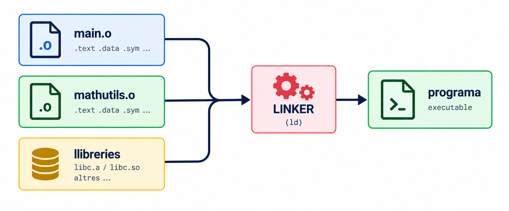
Quina cosa nova ha hagut de fer el linker, que gcc -c no feia?
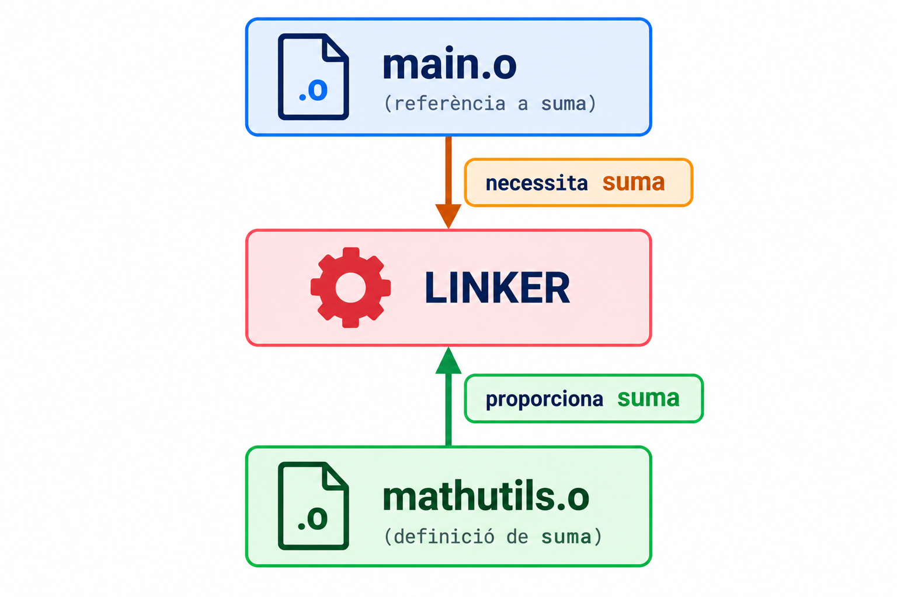
main.o sap que existeix suma, però no necessàriament on estarà definitivament el seu codi dins de l’executable. mathutils.o proporciona suma.
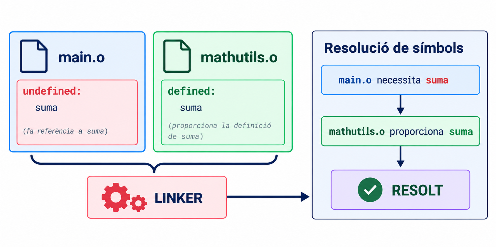
El linker connecta les referències amb les definicions corresponents. Probablement la idea més important d’aquest bloc.
El linker: (1) resol símbols, (2) aplica les reubicacions necessàries, (3) combina els objectes i (4) genera l’executable.
i obteniu un error com aquest:
undefined reference to `suma`El problema no és del compilador. El fitxer main.c es podia compilar perfectament però l’error apareix durant el LINK.
main.c → COMPILER → error
main.c → COMPILER → main.o → LINKER → undefined reference
No tots els errors que apareixen quan fem gcc són errors del compilador.
Si printf no està implementada a main.c, d’on surt?
stdio.h → declaració de printf. libc → la seva implementació.
gcc main.c -o hello funciona sense que hàgiu fet cap enllaç explícit. No cal escriure -lc perquè el driver de gcc enllaça automàticament les llibreries estàndard necessàries, libc inclosa.
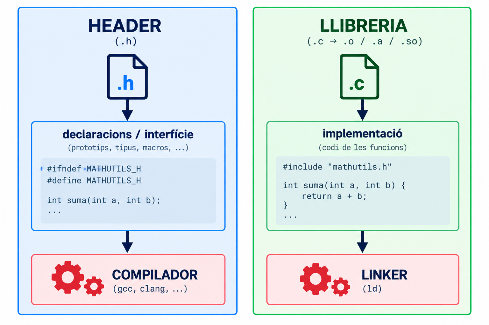
.h → interfície que el compilador necessita. Llibreria → implementació que el linker necessita.
#include i -l... resolen problemes diferents.
Una llibreria estàtica es resol durant l’enllaç i una llibreria compartida hi pot intervenir també el carregador dinàmic en temps d’execució.
-l-lm significa: demana al linker que enllaci amb libm. #include <math.h> proporciona les declaracions que el compilador necessita; -lm és cosa del linker.
Es pot utilitzar -L que permet indicar al linker directoris addicionals on buscar llibreries. No substitueix -l. No entrem avui a explicar -L, rpath, LD_LIBRARY_PATH, etc.
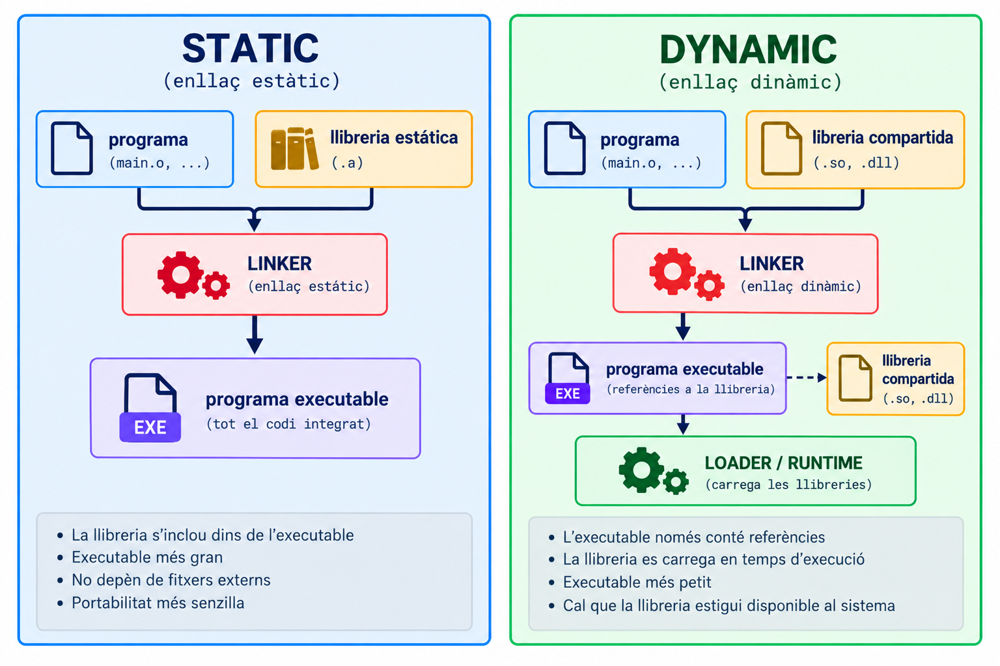
Una llibreria pot formar part de l’executable final o ser carregada com a objecte compartit.
Ho volem escriure nosaltres cada vegada?
make: una eina que descriu dependències i executa les ordres necessàries per actualitzar els fitxers generats, no és una eina per compilar.
make determina quines parts cal recompilar a partir de les dependències.
Què estem descrivint? No diem simplement executa aquestes ordres, diem que programa depèn de main.o + mathutils.o.
make no sap per si sol les dependències del programa. Les ha de conèixer perquè nosaltres les hi hem declarat al Makefile (o perquè les hem generat automàticament amb alguna eina). No podem assumir make sap que main.c utilitza mathutils.h, sap el que declarem.
programa.main.o mathutils.o.gcc ....target : prerequisites, seguit de la recipe.make pensa en dependències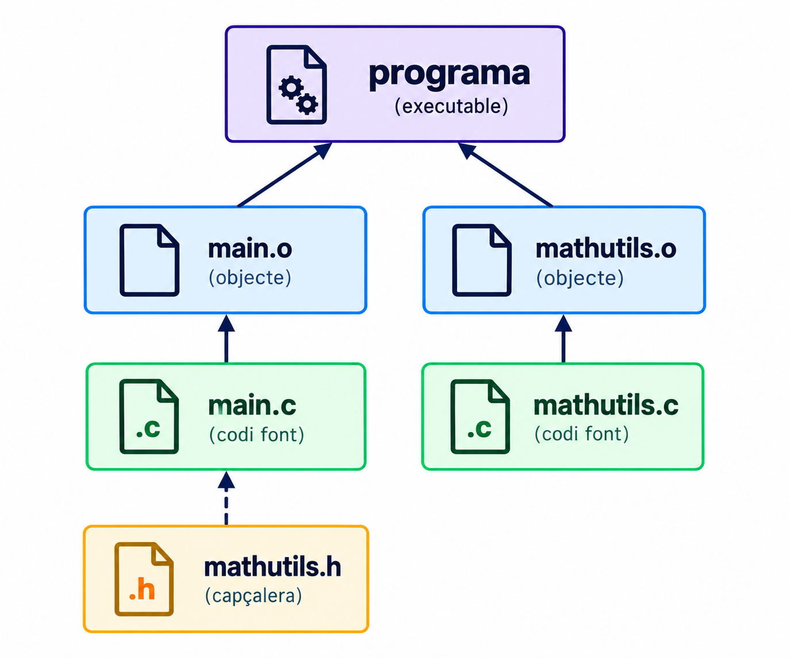
El Makefile descriu un graf de dependències.
makeAquí make genera el programa a partir de les dependències que hem declarat al Makefile. Si tot ha anat bé, veureu:
main.o → cal compilar
mathutils.o → cal compilar
programa → cal enllaçarSi modifiqueu mathutils.c i torneu a fer make, veureu:
main.o → no cal
mathutils.o → cal recompilar
programa → cal reenllaçarmake evita treballar de més. GNU Make comprova si els prerequisites són més recents que el target i només reconstrueix allò que queda obsolet.
Si modifiqueu mathutils.h i torneu a fer make, veureu:
main.o → cal recompilar (depèn de mathutils.h)
mathutils.o → no cal
programa → cal reenllaçarAixò vol dir que main.o s’ha de recompilar perquè depèn de mathutils.h, i després cal tornar a enllaçar l’executable.
Com sap make que main.o depèn de mathutils.h? Perquè li ho hem especificat nosaltres al Makefile, no perquè ho hagi deduït.
Les dependències no són només entre fitxers .c. Els .h també poden provocar recompilacions, però, com sempre, només si les hem declarat.
Les variables fan el Makefile més fàcil de mantenir. GNU Make considera les definicions de variables un dels elements bàsics d’un Makefile.
CC = gcc
CFLAGS = -Wall -Wextra -std=c17
TARGET = programa
OBJS = main.o mathutils.o
$(TARGET): $(OBJS)
$(CC) $(OBJS) -o $@
main.o: main.c mathutils.h
$(CC) $(CFLAGS) -c main.c -o main.o
mathutils.o: mathutils.c
$(CC) $(CFLAGS) -c mathutils.c -o mathutils.o
.PHONY: clean
clean:
rm -f $(OBJS) $(TARGET)$@ → nom del target$< → primer prerequisite$^ → tots els prerequisites.es pot escurçar a:
GNU Make ja té una regla implícita per construir un .o a partir d’un .c, fent servir $(CC)/$(CFLAGS), utilitzant les variables i regles implícites corresponents.
Per què clean no és un fitxer?
Perquè és una acció, no un artefacte. Per això .PHONY: clean. GNU Make classifica aquests com a phony targets, que sempre s’executen quan es demanen.
make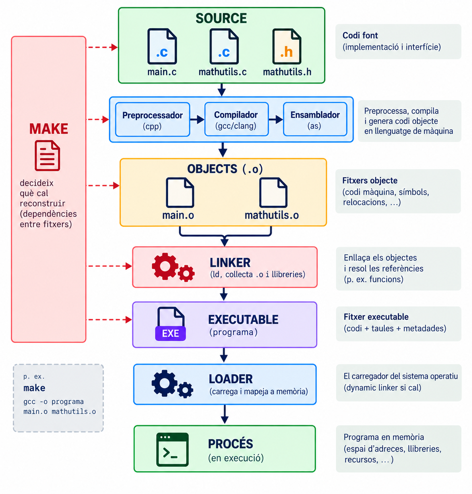
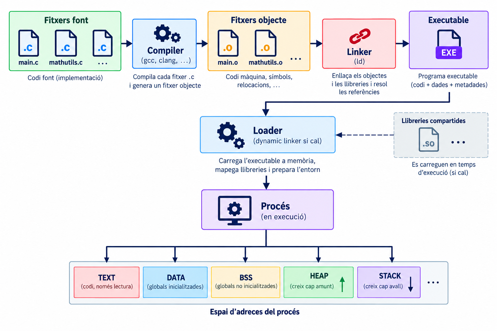
L’executable proporciona part del contingut inicial de l’espai d’adreces del procés, el codi i les dades inicialitzades. No és exactament el mateix dir .o TEXT que procés TEXT: un és una section ELF, l’altre és una regió de l’espai d’adreces en temps d’execució, encara que hi hagi relació directa entre totes dues.
undefined reference apareixen en temps d’enllaç.segmentation fault apareixen en temps d’execució.Els dos primers són problemes de construcció del programa. El tercer no és una etapa que ha fallat. És un senyal generat com a conseqüència d’un accés de memòria no vàlid, i només pot aparèixer quan el programa ja s’està executant.
.c es poden compilar separadament fins a obtenir .o.make descriu dependències i evita reconstruccions innecessàries.